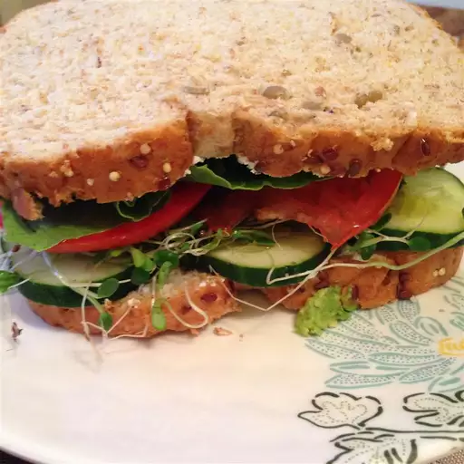

Homemade Sandwich

Home
Sandwich
Showcase of the simple dish made with bread and vegetables and meat. It is simple and cheap to make
making it valuable stable dish to have in your repertoire as you can add multiple things later on
as you perfect the dish
Ingredients
- Bread
- Slices of tomato
- Slices of lettuce
- Slices onions
- Thin layer of mayonaise
- thin slices of cucumber
- Meat of your choice
- Spices (optional)
- Other Vegetables (optional)
Steps
- Take two slices of bread
- Put mayonaise on one slice of bread
- Put meat on the slice of bread
- Put slices of tomato on the slice of bread
- Put slices of lettuce on the slice of bread
- Put slices of cucumber on the slice of bread
- Put slices of onions on the slice of bread
- Put spices on the slice of bread (optional)
- Put the other slice of bread on top
- Experiment with other meats/vegetables and spices (optional)